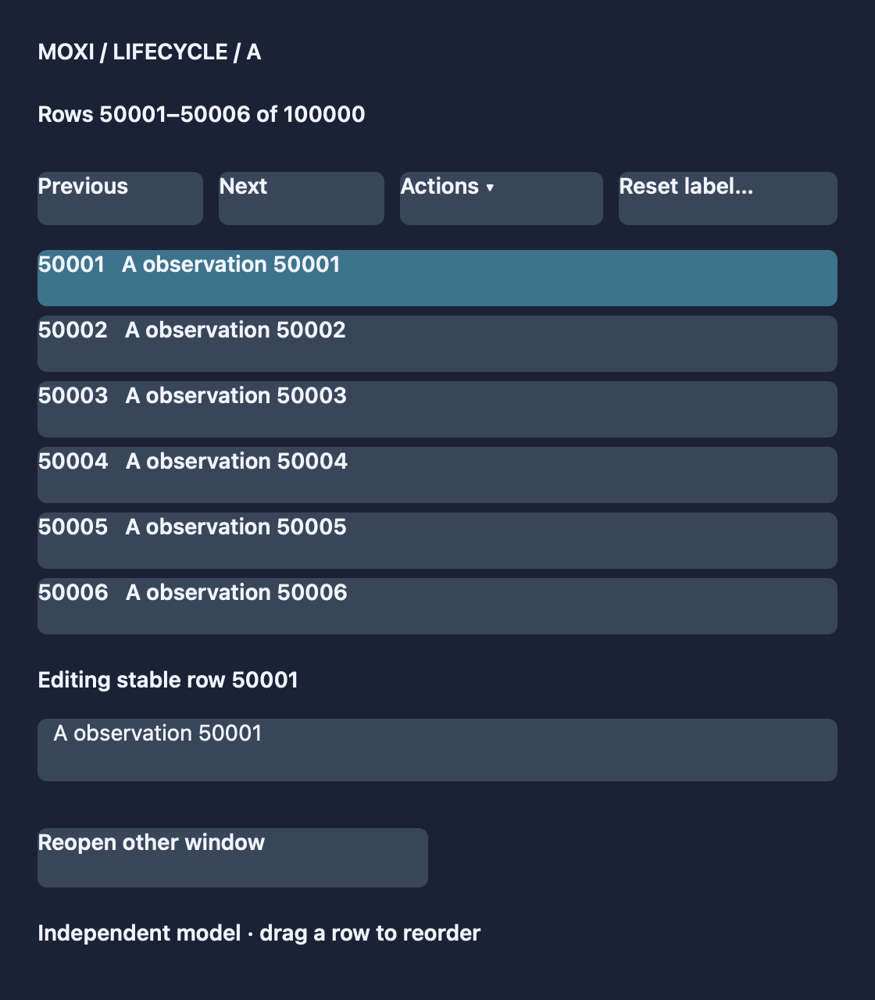
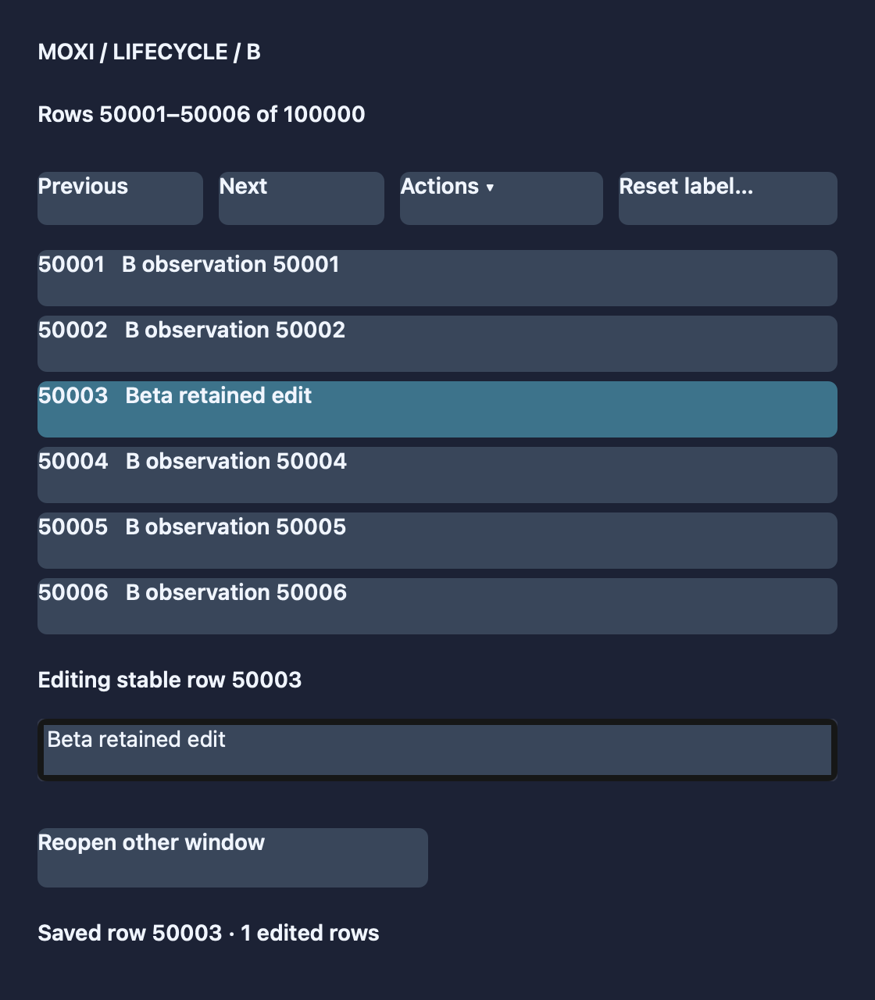
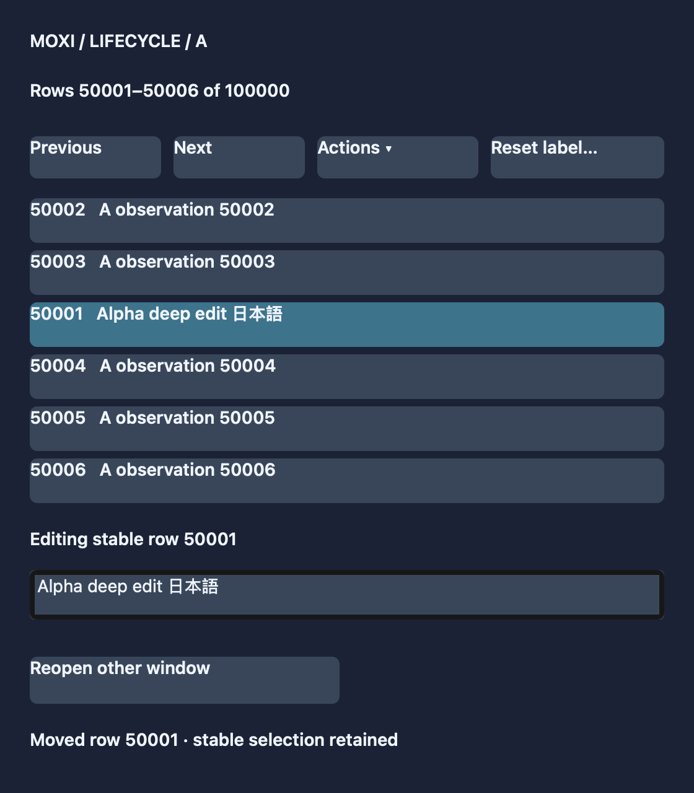
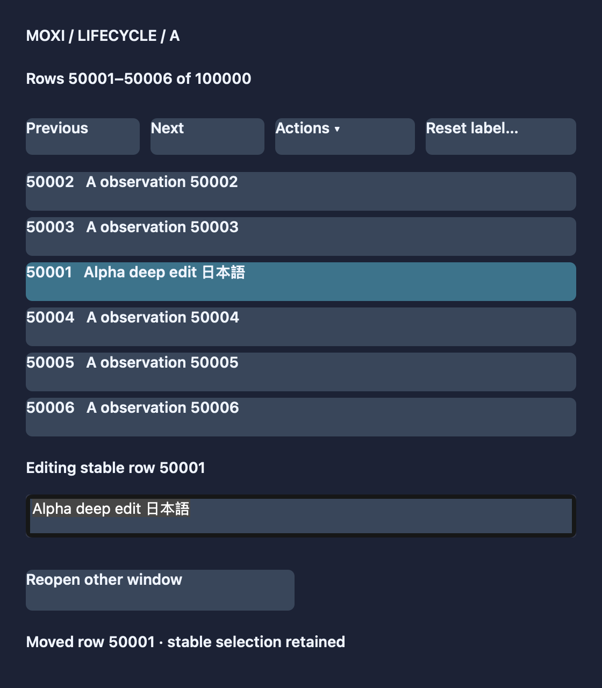
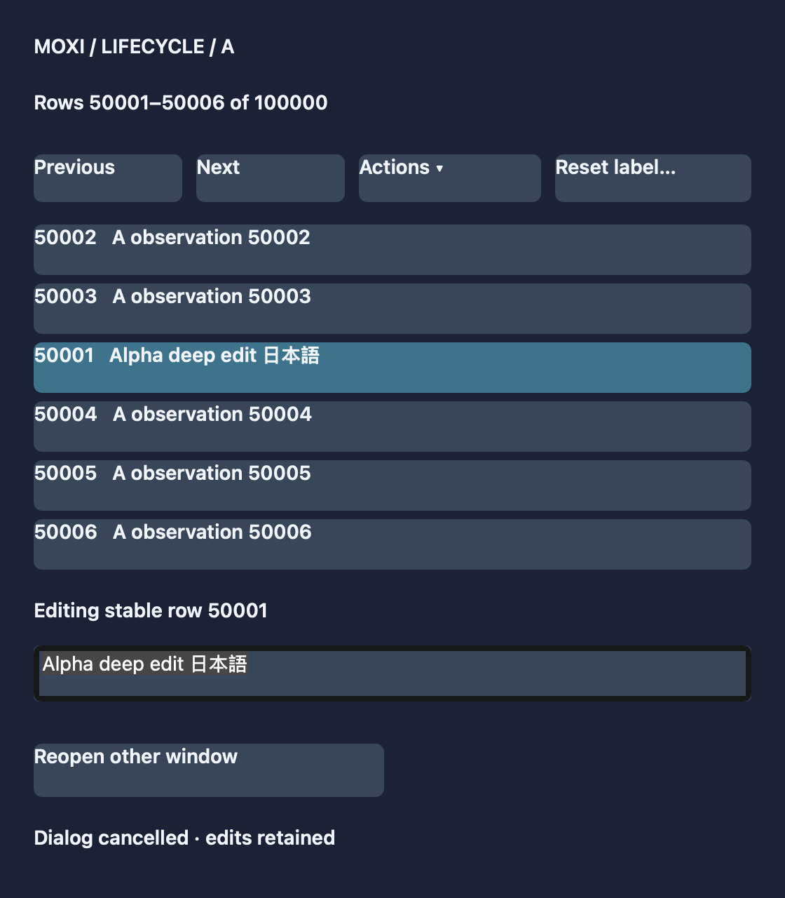
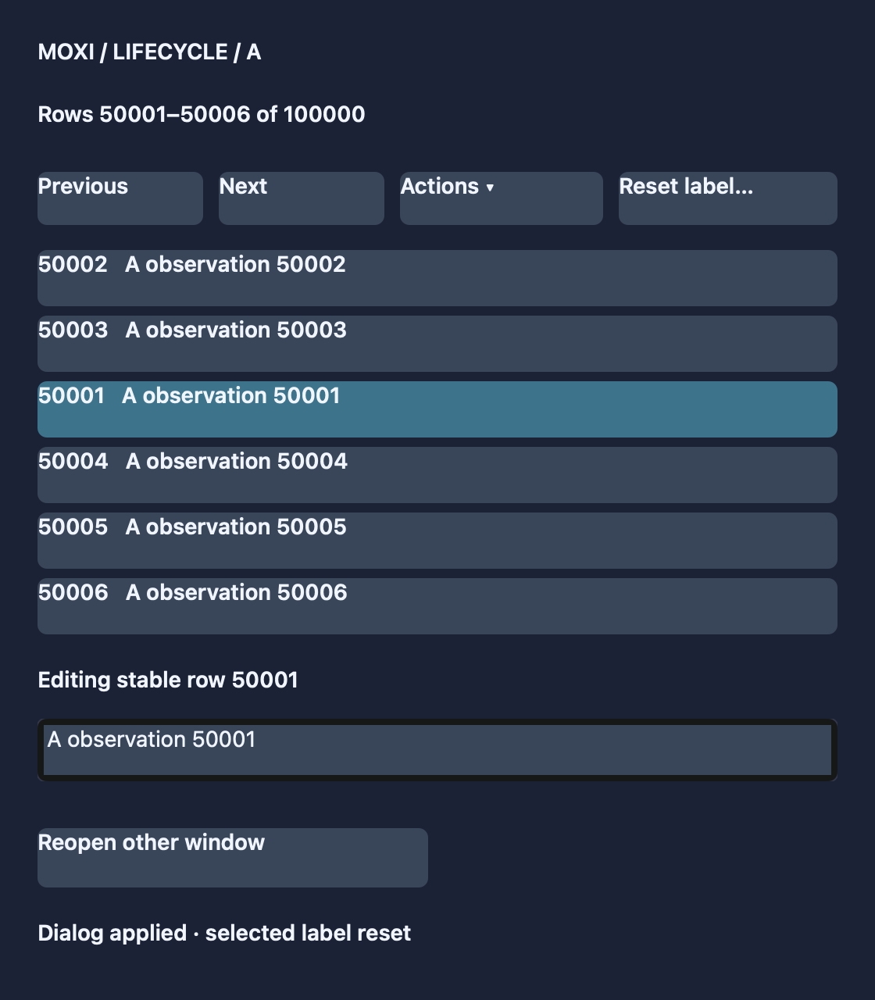
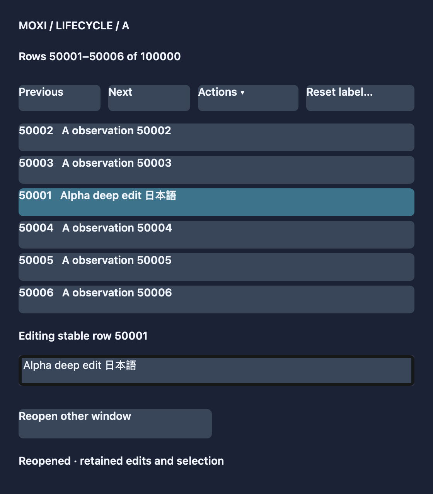

native-lifecycle · c8d602ae51c333602088c5f30eab5f0f0a164340 · macOS 27.0.1 · AppKit live NSWindow content-view cacheDisplay · 100000 stable rows per window; six mounted rows; source SHA-256 1a58cfe52784b91dcade01e8316509ed69e4ba06c027cee047e3ba0e4a6a33a1

Independent A Action: Open both real Moxi windows Expected: A shows rows 50001–50006; row 50001 is selected
initial · native-window · 1120 × 1280 pixels
Independent B Action: Capture B while A remains alive Expected: B has its own labels, selection and model
initial · native-window · 1120 × 1280 pixels
A retains a mixed-script edit Action: Use A's native AX text callback while B is selected Expected: Only A's row 50001 becomes Alpha deep edit 日本語
interaction · native-window · 1120 × 1280 pixels

B retains a different edit Action: Select B's row 50003 and use its native AX text callback Expected: Only B's row 50003 becomes Beta retained edit
interaction · native-window · 1120 × 1280 pixels

Stable identity through drag Action: Deliver AppKit mouse down/drag/up callbacks to A while B is selected Expected: A's row 50001 moves to the third slot with its edit and selection
result · native-window · 1120 × 1280 pixels

Native editor selection Action: Invoke the native menu target and apply the portable selection result Expected: A's native field editor selects the complete retained text
interaction · native-window · 1120 × 1280 pixels

Cancel preserves the edit Action: Open a real NSAlert sheet and resolve Cancel Expected: A retains its mixed-script edit; B remains independent
recovery · native-window · 1120 × 1280 pixels

Apply resets one row Action: Open another native sheet and resolve Apply Expected: A's selected row returns to A observation 50001
result · native-window · 1120 × 1280 pixels
B survives A's disposal Action: Restore A's edit, close A with a sheet open, then invoke its stale callback Expected: B stays open with Beta retained edit
recovery · native-window · 1120 × 1280 pixels

Fresh window, retained model Action: Request reopening through B's native AX button action Expected: A has a new handle and retains its edit, row order and selection
recovery · native-window · 1120 × 1280 pixels
Sibling state remains isolated Action: Close A after reopening and capture B Expected: B still shows its independent selected row and edit
Two real Moxi/AppKit collection windows: isolated editing, drag, sheet outcomes and retained reopen. Scripted native callbacks; content-view captures exclude window chrome and compositor effects.
Screenshots show recorded states. They do not establish latency, scientific accuracy, physical IME, screen-reader behavior, or human usability.